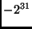
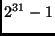
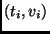
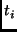
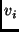

Values are typed. The types and values of the language are shown in Table A.1.
The values true, false, emptylist (the list of length zero), emptybinding (the binding of length zero), and err are not to be confused with the language literals TRUE, FALSE, <>, [], and ERR that denote those values.
The type t_bool contains the Boolean values true and false, denoted in the language by the literals TRUE and FALSE.
The type t_int contains integers over at least the range  to ; the exact range is implementation dependent.
The type t_text contains arbitrary sequences of 8-bit bytes. This type is used to represent text literals (quoted strings) in SDL programs as well as the contents of files introduced through the Files nonterminal of the grammar. Consequently, an implementation must reasonably support the representation of large values of this type (thousands of bytes or more), but is not required to support efficient operations on large text values.
The type t_list contains sequences of values. The elements of a list need not be of the same type.
The type t_binding contains sequences of pairs , in which each  is a non-empty value of type t_text, each  is an arbitrary Vesta value (i.e., of type t_value), and the are all distinct. Note that bindings are sequences: they are ordered. The domain of a binding is the set of names at its top level. Bindings may be nested.
Bindings play an important role in the Vesta language. They are used to represent a variety of interesting objects. For example, flat bindings that map names to texts can be used to represent command-line switches and environment variables; bindings that contain nested bindings can be used to represent file systems; and bindings that map names to closures can be used to represent interfaces. Section A.3.4.5 describes the primitive functions and operators for manipulating bindings, including three primitives for combining two bindings.
The type t_closure contains closure values for the primitive operators
and functions (defined in Section A.3.4) as well
as for user-defined functions. In a closure
 :
:
The type t_err consists of the single distinguished value err, denoted in the language by the literal ERR. Programmers can use this value as they choose; it has no predefined semantics. Contrary to what was stated in previous editions of the SDL specification, Vesta primitive functions do not return err in runtime error cases. Rather, a runtime error halts evaluation with an error message, and no value is returned.